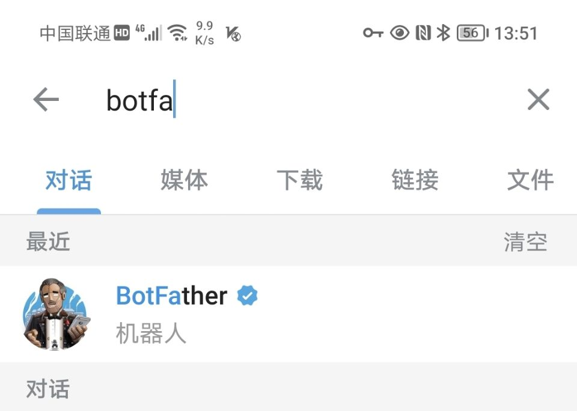
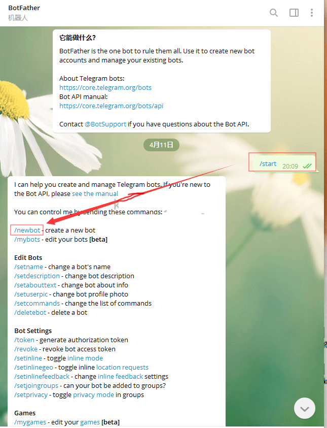
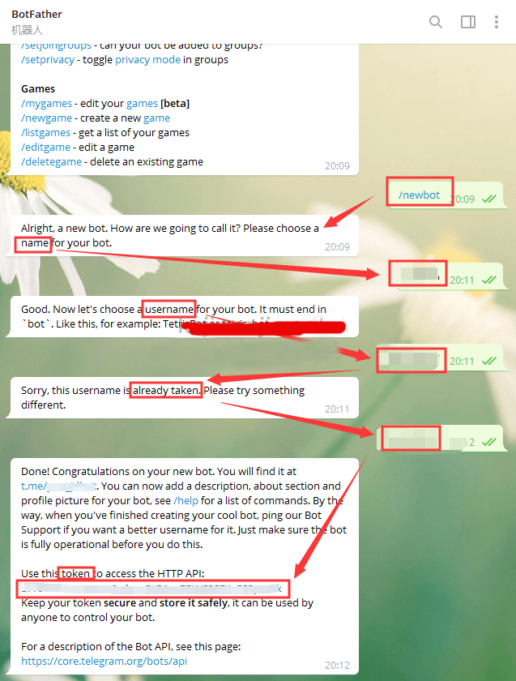
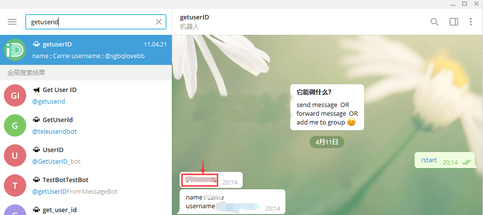
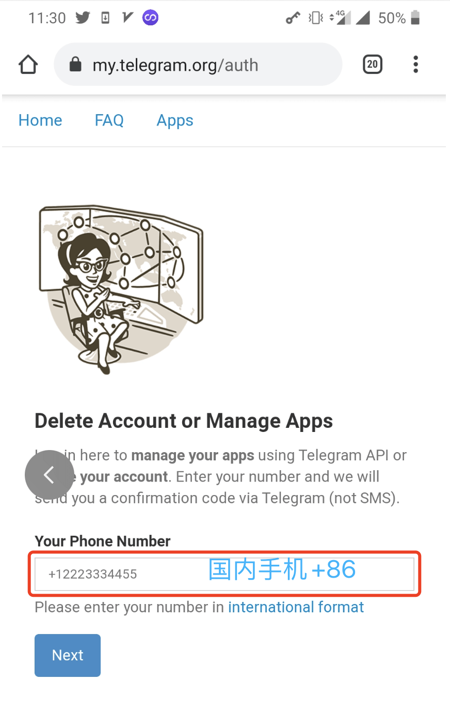
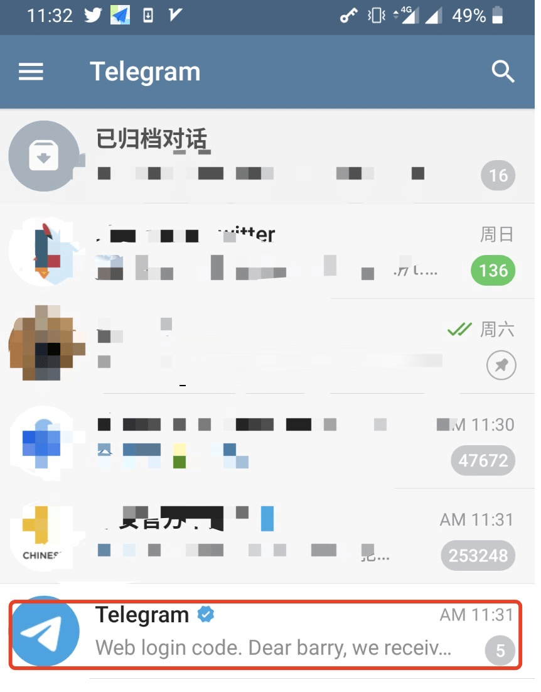
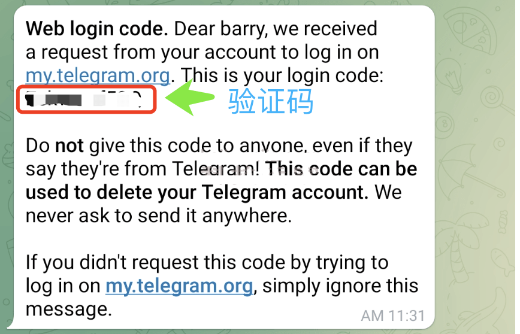
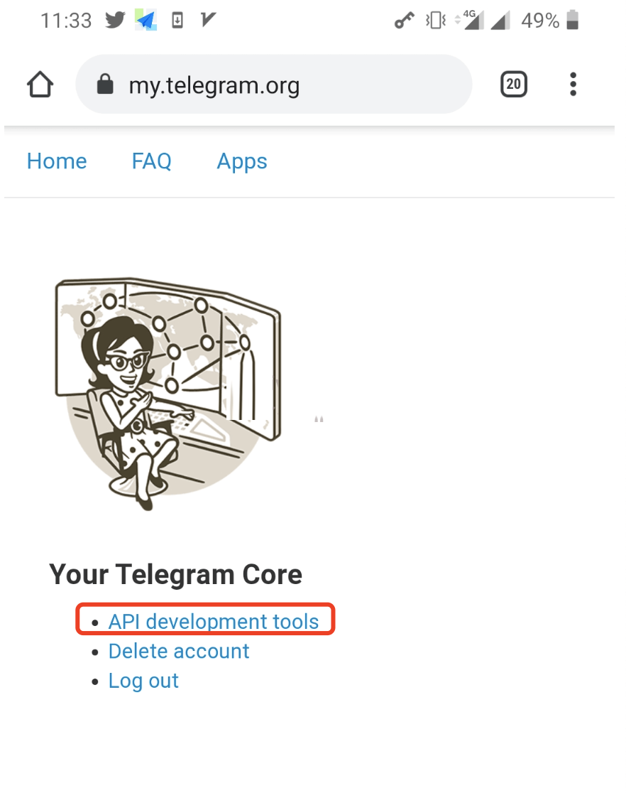
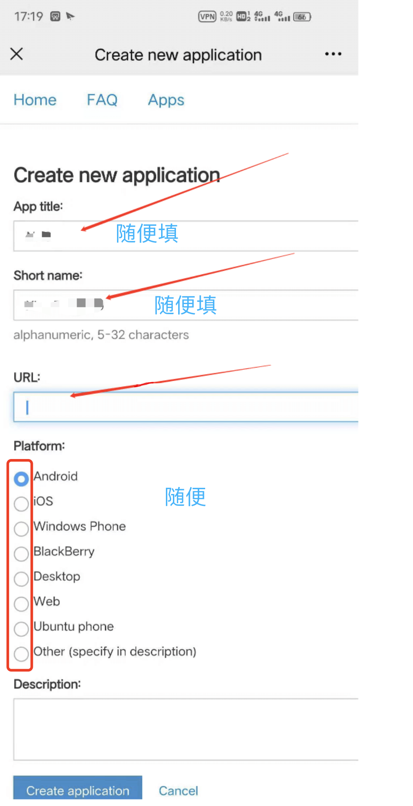
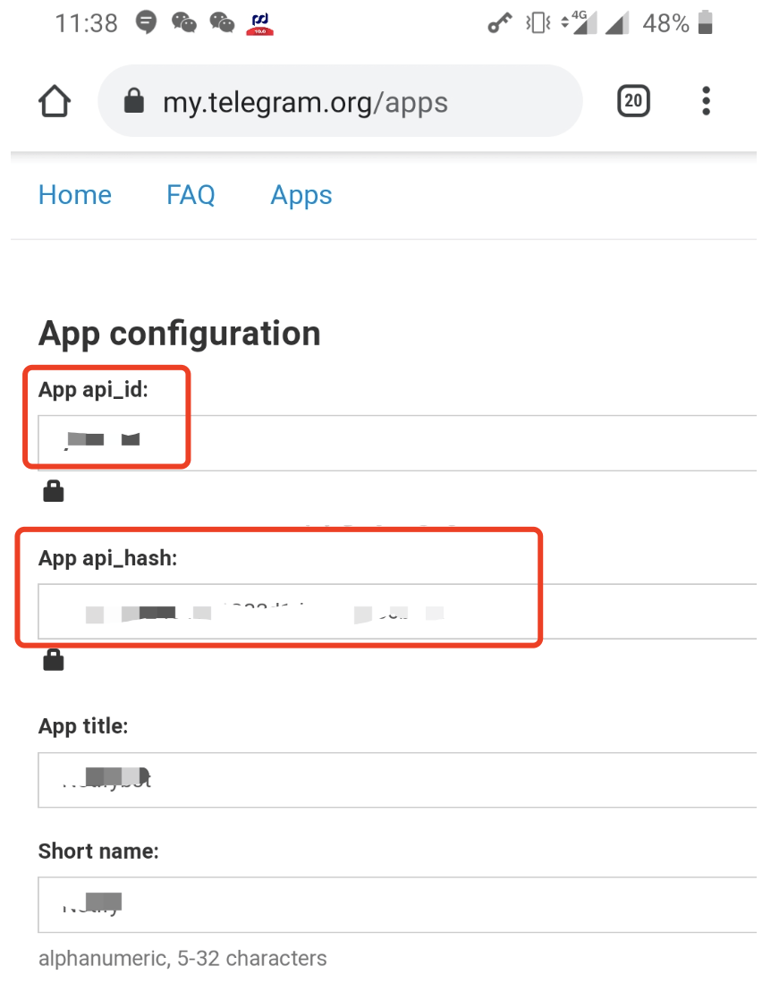

本页面目录
对接TG
1.搜索BotFather
2.获取BOT_TOKEN和BOT _USER _ID两个参数
选择BotFather，对话框最下面的点击”开始“，会收到自动回复消息；点击选择”/newbot“，系统会自动回复：给你的机器人起一个名字。
回复你想要设置的机器人名字，系统会自动回复：设置一个username； 回复你想要设置的username：如名字已被占用，会要求你重新设置，请注意后缀必须有bot； 成功设置username后，会收到token，即第一个参数“BOT_TOKEN”；
3.获取UserID
然后搜索getuserIDbot，并点击开始对话，getuserIDbot会发送给你一串数字，就是UserID，即第二个参数”BOT _USER _ID“
4.获取BOT_API_ID、BOT_API_HASH
访问 https://my.telegram.org/ 输入自己的手机号码，国内手机号码需要前面➕86； 填好手机号码，点“next”，会发送验证码，发完后回到Telegram，收到官方账号发的验证码copy，回到网页填上； 选择API development tools，app title、shortname随便填，url 不用填，platform随便选?creatapplication； 然后就能得到第三个参数BOT_API_ID和第四个参数BOT_API_HASH
     5.设置autMan对接tg机器人
设置token指令：set tb token ddddddd:XXXXXXXX
设置管理员指令：set tb masters XXXXXX
6.设置autMan对接tg客户端
指令：登陆tg
【重要】首次登陆autMan的tg客户端时，不要打开页面上的自动登陆。在对接的qq\wx\web\terminal上发送指令：登陆tg，注意不要在tg上发送指令。手动成功登陆一次后。就可以把网页上的自动登陆tg客户端打开了。 【重要】"登陆tg"获取不到验证码的解决办法：在手机app上打开tg的2步验证，再进行“登陆tg”。“登陆tg”时先不要开启web上tg的“自动登录”，等手动登陆上以后无问题再开启自动登陆。
TG注意事项： 1.autMan的tg客户端非官方，TG对待此类客户端一般比较谨慎，尤其是新号。2.尽量使用tg官方机器人，少用tg客户端。3.确需使用tg客户端的尽量使用间谍模式，更多用于接收消息，少发送消息。4.不要用二维码登陆，不要用VoIP号码，不要用于色情、暴力等非法活动。